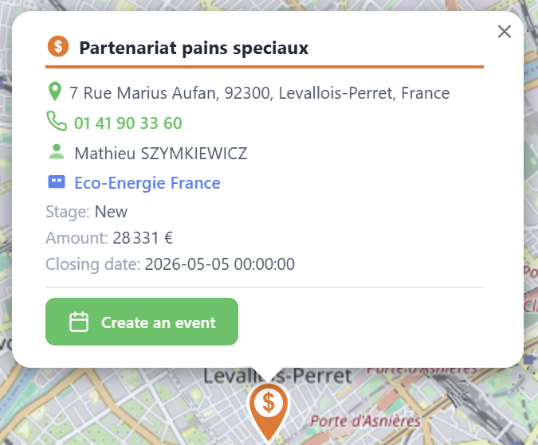
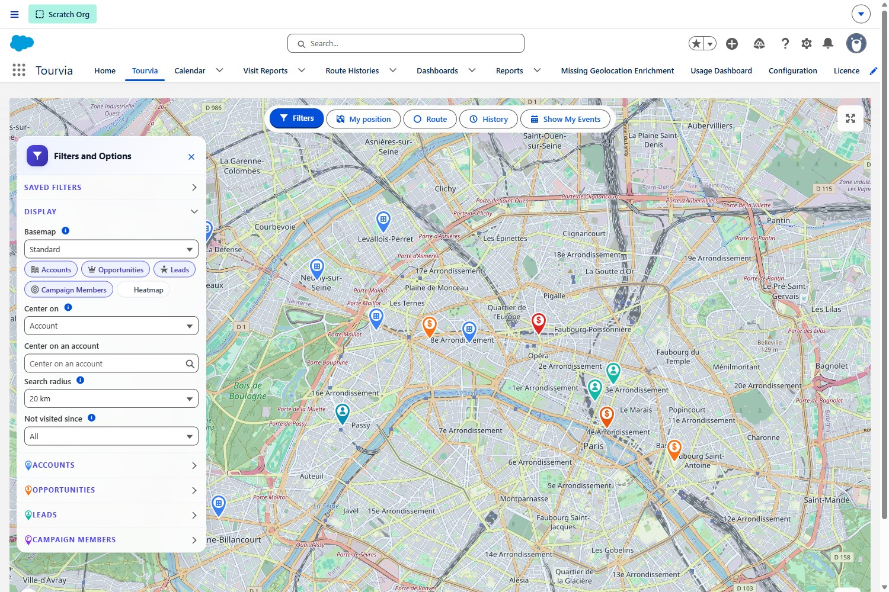
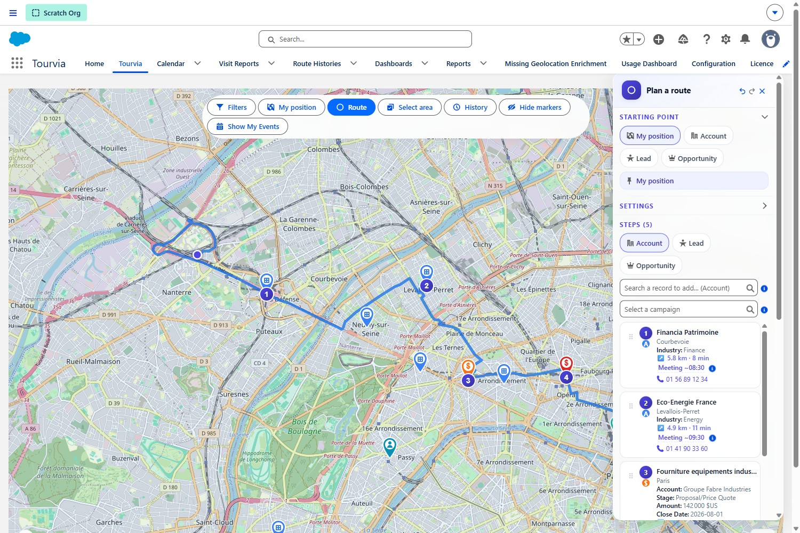
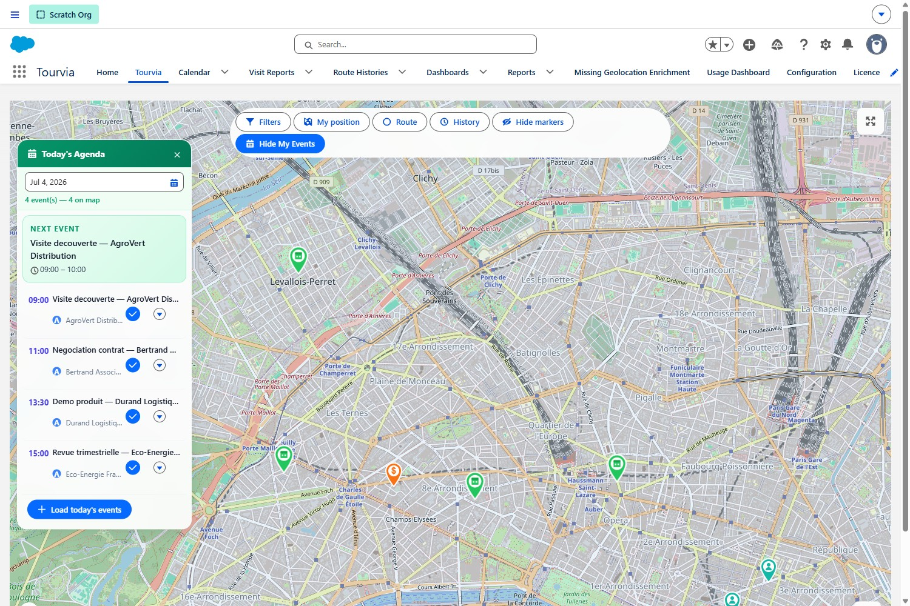
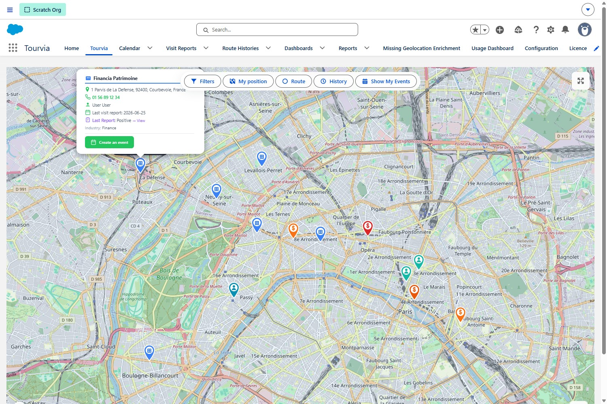
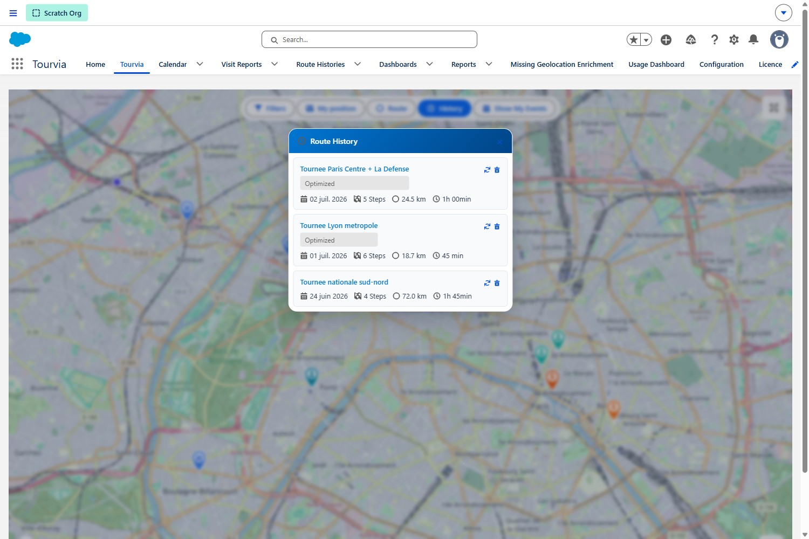
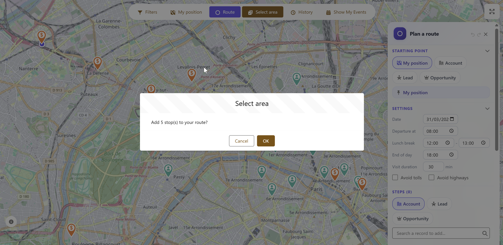
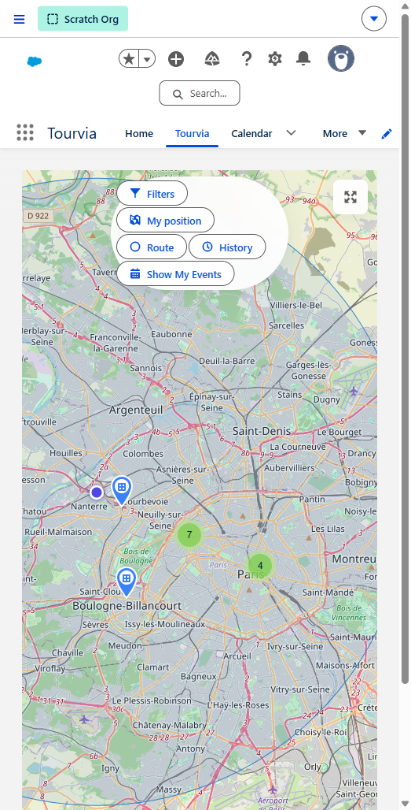

RouteForce User Guide
Version: V7.4.0 — March 2026
Audience: Field sales reps, territory managers
Platform: Salesforce Desktop & Salesforce Mobile App
RouteForce is a map-based field operations tool built natively inside Salesforce. It lets you visualize your territory, filter records, plan optimized routes, conduct GPS-verified visits, and maintain a complete route history — all without leaving Salesforce.
1. Getting Started
Open RouteForce
- Click the App Launcher (waffle icon) in Salesforce.
- Type RouteForce and select the app.
- The map loads automatically with your geocoded records.

Interface overview
| Area | Purpose |
|---|---|
| Map | Interactive map showing Accounts, Leads, and Opportunities as color-coded markers |
| Filter Panel (left) | Narrow down which records appear on the map |
| Route Panel (right) | Build, optimize, and manage your route stops |
| Events Panel | View today's calendar events on the map |
| History Panel | Browse and reload previously saved routes |
Main tabs
- RouteForce — the live map and planning workspace
- Route History — all previously saved routes
- Saved Filters — reusable filter presets you have created or that were shared with you
- Visit Reports — check-in/check-out records and visit outcomes
- Configuration — admin-only settings (not covered in this guide)
2. The Map
The map is the core of RouteForce. It displays three object types simultaneously so you get a complete view of your territory at a glance.
Multi-object display
RouteForce shows Accounts, Leads, and Opportunities on the map at the same time. Each object type uses a distinct marker color so you can tell them apart instantly.
| Marker Color | Object |
|---|---|
| Blue tones | Accounts |
| Teal / green tones | Leads |
| Orange / red tones | Opportunities |
| Purple / calendar icon | Events (when loaded) |
Map layers
Switch between two map styles using the basemap selector in the top-right corner of the map:
- Standard — clean street map, best for daily planning
- Satellite — aerial imagery, useful for locating buildings or rural sites
Clustering
When many markers are close together, RouteForce groups them into clusters. A cluster displays the number of records it contains. Click a cluster to zoom in and reveal individual markers.
- The clustering radius is set to 60 pixels by default (configurable by your admin).
- As you zoom in, clusters automatically break apart into individual markers.
Map controls
| Control | What It Does |
|---|---|
| Zoom + / - | Zoom in or out (default zoom level is 10) |
| Fullscreen | Expand the map to fill the browser window |
| My Location | Center the map on your current GPS position |
| Basemap Selector | Toggle between Standard and Satellite views |
| Scale | Shows approximate distance on the map |
Address source
Markers are placed based on geocoded addresses. Your admin configures whether RouteForce uses the Shipping Address or the Billing Address for Accounts. If a record has no valid coordinates, it will not appear on the map.
3. Marker Popups and Actions
Click any marker on the map to open its popup. The popup shows key information about the record and gives you quick actions — without leaving the map.

What you see in the popup
The popup works for Accounts, Leads, and Opportunities. Each shows:
- Record name — clickable link at the top, color-coded by type (blue for Account, green for Lead, orange for Opportunity). Opens the full Salesforce record.
- Address — with a directions link that opens Google Maps with turn-by-turn navigation to this location
- Phone number — tap to call directly (click-to-call, shown in green)
- Owner — the Salesforce user assigned to this record
- Last visit date — shows the date of the last check-in. Turns red with a "days ago" counter if the visit is overdue (based on your admin's alert threshold)
- Last visit report — if a visit report exists, shows the result (Positive/Neutral/Negative) with a link to open the full report
- Additional fields — extra fields configured by your admin (industry, type, stage, etc.)
- For Opportunities — also shows the parent Account name as a clickable link
Actions available
| Action | What it does |
|---|---|
| Create an event | The green button at the bottom of the popup. Creates a Salesforce Event linked to this record (Account, Lead, or Opportunity) — schedule a visit in one tap. |
| Click-to-Call | Tap the phone number to call directly from your device. On mobile, it launches the phone dialer. |
| Navigate | Tap the directions arrow icon on the address to open Google Maps with directions to this location. |
| Open Record | Click the account name to open the full Salesforce record in a new tab. |
| Custom Actions | Your admin can add extra buttons (Screen Flows) — for example, a quick order form or a customer survey. |
Contact lookup (Route steps)
When you add an Account to your route, the route step card can show related Contacts for that account. This lets you see who to call or meet before heading there. This feature is controlled by your admin (ContactLookupEnabled) and appears in the route panel, not in the map popup.
Custom actions (admin-configured)
Admins can add custom action buttons to the popup using RouteForceAction__mdt metadata. These launch Screen Flows directly from the popup — for example, a price survey, a shelf audit, or a quick re-order form. See the Configuration Guide for details.
4. Filtering Records
The filter panel lets you control exactly which records appear on the map. Use filters to focus on a specific territory segment, customer type, or follow-up list.

Default filter fields
RouteForce ships with 2 default filter fields:
- Account.Industry
- Account.Type
Your admin can add as many filters as needed — either via RouteForceConfig__mdt (FilterFields__c) or via Lightning App Builder (FlexiPage). Filters are comma-separated field paths, for example:
Account.Industry,Account.Type,Opportunity.StageName,Lead.Status,Opportunity.Account.Industry
Cross-object filters are supported (e.g. Opportunity.Account.Industry).
Supported field types
- Picklist — select one or more values from a dropdown
- Multi-Select Picklist — select multiple values with checkboxes
- Boolean (Checkbox) — toggle on/off
"Not visited since" filter
This special filter highlights records that have not been visited within a given number of days. The default threshold is 30 days. Use this to identify neglected accounts or leads that need attention.
How to use filters
- Open the Filter Panel on the left side of the screen.
- Set one or more filter values.
- Click Apply to refresh the map.
- The map now shows only the records matching your criteria.
5. Saving and Sharing Filters
When you find a filter combination you use regularly, save it as a preset so you can reapply it with one click.
Save a filter preset
- Configure your filters exactly as you want them.
- Click Save Filter in the filter panel.
- Enter a descriptive name (e.g., "Hot Manufacturing Accounts - North").
- Choose whether to make it public or keep it private:
- Private — only you can see and use this preset.
- Public — any RouteForce user in your org can see and apply this preset.
- Click Save.
Load a saved filter
- Open the Saved Filters dropdown.
- Select a preset from the list (your private filters and all public filters are shown).
- RouteForce immediately applies all filter values and refreshes the map.
Delete a saved filter
- Select the filter preset from the dropdown.
- Click the Delete button.
- Confirm the deletion.
6. Route Planning
The route panel is where you build your daily field plan. Add the stops you want to visit, arrange them in order, configure timing, and let RouteForce handle the rest.

Add stops
There are two ways to add stops to your route:
- From the map: Click a marker, then click Add to Route in the popup.
- From search: Use the search bar in the route panel to find a record by name, then add it.
Each stop shows its sequence number, record name, city, and record type (Account, Lead, or Opportunity).
Reorder stops
- Drag and drop — grab a stop and move it to a new position in the list.
- The map updates the route line in real time as you reorder.
Undo / Redo
Made a mistake? Use the Undo and Redo buttons at the top of the route panel to step backward or forward through your recent changes.
Remove a stop
Click the trash icon next to any stop to remove it from the route.
Route settings
Before optimizing, configure these time parameters to get realistic arrival estimates:
| Setting | Description |
|---|---|
| Departure Time | When you plan to leave for your first stop |
| Visit Duration | How long you typically spend at each stop (used for arrival time calculations) |
| Lunch Break | Time reserved for lunch — the optimizer will not schedule visits during this window |
| End of Day | Latest time you want to be visiting — stops after this time will be flagged |
| Avoid Tolls | Route around toll roads when possible |
| Avoid Highways | Prefer smaller roads (useful for rural territories) |
7. Route Optimization
Once you have at least two stops and a starting point, click Optimize to let RouteForce calculate the most efficient order.
What happens when you optimize
- RouteForce sends your stops to the optimization engine (VROOM algorithm via OpenRouteService).
- Stops are reordered to minimize total travel time and distance.
- The optimized route is drawn on the map as a colored line connecting each stop in sequence.
- Estimated arrival times are calculated for each stop, respecting your departure time, visit duration, lunch break, and end-of-day settings.
- A route summary appears showing total distance (in km) and total duration.
After optimization
You can still make changes after optimizing:
- Manually reorder stops if you prefer a different sequence.
- Add or remove stops and re-optimize.
- Adjust route settings (departure time, lunch break, etc.) and optimize again.
8. Exporting Routes
After building or optimizing a route, you can export it for navigation or reporting.
Export to Google Maps
Click Export to Google Maps to open the route in Google Maps with all your stops as waypoints. This gives you turn-by-turn navigation for your field day.
- On desktop, Google Maps opens in a new browser tab.
- On mobile, it opens directly in the Google Maps app for live navigation.
Export to CSV
Click Export CSV to download a spreadsheet with your route details:
| Column | Content |
|---|---|
| Stop Number | Sequence position in the route |
| Record Name | Account, Lead, or Opportunity name |
| City | City from the record address |
| Arrival Time | Estimated arrival based on optimization |
| Contact | Assigned contact (if available) |
| Distance | Distance from previous stop |
| Duration | Travel time from previous stop |
9. Creating Salesforce Events
RouteForce can create Salesforce Events directly from your route stops, so your calendar reflects your field plan.
Create events from a route
- Build and optimize your route.
- Click Create Events (or Create Visits).
- Single events from marker popups use the RF_CreateEvent flow.
- Each event includes:
- Subject (visit purpose)
- Start and end time (based on optimization estimates)
- Related record (Account, Lead, or Opportunity)
- Location
Bulk event creation
After optimization, you can create events for all stops at once rather than one by one. Bulk event creation from the route panel uses direct Apex (RouteService.createRouteEvents) for performance. This is the fastest way to populate your calendar for the day.
Calendar overlap detection
RouteForce checks your existing Salesforce calendar before creating events. If a new event would overlap with an existing one, you will see a warning so you can adjust the timing or skip that stop.

10. Today's Agenda (Events Panel)
The Events Panel gives you a quick view of your Salesforce calendar events for today, displayed directly on the map.
How to use it
- Open the Events Panel.
- Today's events are loaded automatically and shown as markers on the map.
- Use the Show/Hide Events toggle to control whether event markers are visible.
Event details
Click an event marker to see:
- Event subject and time
- Related record (Account, Lead, Opportunity)
- Location
- Quick action buttons (open record, navigate, check in)
11. Check-In / Check-Out (Visit Reports)
The check-in/check-out system lets you record visits as they happen, with GPS verification and a structured visit report.

Step 1: Check in
- When you arrive at a customer location, open the event marker or event from the Events Panel.
- Click Check In.
- RouteForce captures your GPS position and verifies you are within range of the location.
- The on-site detection radius is 500 meters by default (configurable by your admin).
- Your GPS accuracy is displayed so you know how precise the reading is.
- The check-in timestamp is recorded automatically.
Previous visit context
When you check in, RouteForce shows you a summary of the previous visit to this same record (if any). This includes the last visit date, result, and notes — so you have context before your meeting starts.
Step 2: Complete the visit report
After your meeting, fill in the visit report. The form shows 3 standard fields (Result, Next Action, Notes) plus admin-configurable custom fields. By default, the custom fields include Satisfaction, Order Amount, and Next Visit Date — but your admin can change this via VisitReportCustomFields__c in RouteForceConfig__mdt.
| Field | Description |
|---|---|
| Result | Overall visit outcome. This is a text field — the available options are configured by your admin via VisitResultOptions__c. The default options are: Positive, Neutral, Negative, No Answer. |
| Next Action | What follow-up action is needed (e.g., send quote, schedule demo) |
| Notes | Free-form rich text field for detailed visit notes (supports Quick Text — see Section 15) |
| Satisfaction (custom field) | Customer satisfaction level observed during the visit |
| Order Amount (custom field) | If an order was placed, enter the amount here |
| Next Visit Date (custom field) | When the customer should be visited again |
Step 3: Check out
- Click Check Out when you are ready to leave.
- The check-out timestamp is recorded.
- RouteForce automatically calculates the visit duration (time between check-in and check-out).
After check-out
- A Visit Report record is created in Salesforce, linked to the Account/Lead/Opportunity.
- A Google Maps link to the check-in location is saved for reference.
- Your manager can review visit reports from the Visit Reports tab.
12. Route History
Every route you build is saved automatically. You can browse past routes, replay them on the map, and reuse them as templates for future days.
Browse past routes
- Open the Route History tab.
- Routes are listed by date, most recent first.
- Each entry shows:
- Route name (if naming is enabled) or date
- Number of stops
- Total distance (km)
- Total duration
- Whether it was optimized
Replay a route on the map
Select a past route to replay it on the map. The route line, stops, and sequence are displayed exactly as they were. This is useful for:
- Reviewing what you did on a specific day
- Showing your manager your territory coverage
- Reloading a proven route as a starting point for a new day
Route naming
If your admin has enabled route naming (EnableHistoryNaming), you can give each route a descriptive name (e.g., "North District - Monday Round"). This makes it easier to find specific routes later.
Delete a route
Select a route and click Delete to remove it from your history. This cannot be undone.

13. Heatmap
The heatmap overlay provides a visual density view of your records on the map. Areas with many records appear as warm colors (red, high density), while sparse areas appear as indigo/purple (low density), transitioning through amber in between.
How to use it
- Click the Heatmap toggle button on the map toolbar.
- The heatmap overlay appears on top of the map.
- Click the toggle again to turn it off and return to individual markers.
When to use it
- Identify which areas of your territory have the highest concentration of records.
- Spot underserved zones with few accounts or leads.
- Plan route days around high-density areas for efficiency.
14. Bulk Select (Rectangle Selection Tool)
The rectangle selection tool lets you select multiple records on the map at once by drawing a selection area.

How to use it
- Click Select Area in the toolbar.
- Click and drag on the map to draw a rectangle around the records you want to select.
- All markers inside the rectangle are selected and highlighted.
What you can do with a selection
- Add all to route — adds every selected record as a route stop in one action.
- Bulk operations — depending on your admin configuration, additional bulk actions may be available.
15. Quick Text for Visit Notes
Quick Text provides pre-defined text templates that you can insert into the visit notes field during check-in/check-out. This saves time and ensures consistent reporting.
How to use it
- During check-in or check-out, click in the Notes field.
- Click the Quick Text button (or look for the template icon).
- Select a template from the list.
- The template text is inserted into the notes field.
- Edit the inserted text as needed to add specific details.
Rich text support
The notes field supports rich text formatting — bold, italic, bullet points, and more. Quick Text templates can include formatting, so your visit notes look professional and well-structured.
QuickTextEnabled__c). Templates are standard Salesforce Quick Text records — managed in Setup > Quick Text, not in RouteForce configuration.16. Mobile Usage
RouteForce is fully functional on the Salesforce Mobile App. The map, routes, check-in, and visit reports all work on your phone.

Mobile interface overview
The mobile view shows the full interactive map with your accounts, leads, and opportunities displayed as markers and clusters (green circles with numbers). The map supports pinch to zoom and drag to navigate.
The FAB button (+ button)
The indigo floating action button (FAB) in the bottom-right corner is your main action hub on mobile. Tap it to access:
- Filters — open the filter panel to narrow down visible records
- My position — center the map on your current GPS location
- Route — open the route planner to add stops and optimize
- History — browse and replay your past routes
- Show My Events — toggle today's agenda events on the map
- Bulk Select (Select Area) — draw a rectangle to select multiple records (if enabled by admin)
- Hide Markers — temporarily hide all markers to see the map clearly (if enabled)
The info button (bottom-left) shows the map legend and color codes for different marker types.
Key mobile workflows
| Workflow | How It Works on Mobile |
|---|---|
| GPS Check-In | Uses your phone's GPS for accurate location verification. On-site detection (500m radius) works with better precision than desktop. |
| Click-to-Call | Tap a phone number on any marker popup — initiates a phone call directly. |
| Navigate | Tap "Navigate" on any marker — opens Google Maps with turn-by-turn directions. |
| Visit Reports | Complete check-in/check-out forms on your phone immediately after each visit. All fields (result, satisfaction, next action, notes) are touch-optimized. |
| Route Export | Export your optimized route to Google Maps — launches the app for live navigation between stops. |
17. Troubleshooting
| Problem | What to Check |
|---|---|
| No markers appear on the map | Records must have valid latitude/longitude coordinates. Ask your admin to verify geocoding is running. |
| Map does not load | Check your internet connection. If the problem persists, ask your admin to verify the RouteForce license and remote site settings. |
| Route optimization fails | Reduce the number of stops (max 50) and try again. Ensure all stops have valid addresses. |
| Events do not appear on the map | Check that you have Events for today in your Salesforce calendar. Try toggling Show/Hide Events. |
| Check-in button is greyed out | You may be too far from the location (outside the 500m radius). Move closer and try again. If you are on-site, check that GPS is enabled on your device. |
| Check-in says "Low GPS accuracy" | Move to an open area away from tall buildings. Wait a few seconds for the GPS signal to stabilize, then try again. |
| CSV export is empty | You must optimize the route first. Build your stops, click Optimize, then export. |
| Filter changes have no effect | Make sure you click Apply after changing filter values. |
| Heatmap or Select Area button is missing | These features are optional. Ask your admin to enable them in RouteForce configuration. |
| Quick Text templates are not showing | Quick Text must be enabled by your admin. Contact them to verify the configuration. |
| A specific record is missing from the map | The record may not have a geocoded address, or it may be filtered out. Clear all filters and check if it appears. |
| Route history is empty | Routes are saved when you build them. If you have never created a route, history will be empty. |
18. Best Practices
Planning your day
- Start each morning by opening RouteForce and reviewing your Today's Agenda.
- Use the "Not visited since" filter to identify accounts that need attention.
- Keep routes realistic — 5 to 10 stops per day is typical. Do not overload your schedule.
- Set accurate departure time and visit duration before optimizing for reliable arrival estimates.
- Export your optimized route to Google Maps before leaving the office.
In the field
- Check in immediately when you arrive at each location. Do not wait until the end of the day.
- Check out before leaving so visit duration is calculated accurately.
- Use Quick Text templates to speed up note-taking while keeping reports consistent.
- Use Click-to-Call from the popup to call ahead before driving to a stop.
- If a stop is cancelled, remove it from your route and re-optimize.
Managing your territory
- Save filter presets for recurring territory views (e.g., "Key Accounts - East", "New Leads - This Month").
- Share useful filters as public presets so your team can benefit.
- Use the Heatmap to visualize account density and identify coverage gaps.
- Review your Route History weekly to ensure balanced territory coverage.
- Name your routes (if enabled) to find them easily later.
For managers
- Review Visit Reports to track team activity and visit outcomes.
- Use the Route History tab to see which areas your reps are covering.
- Check visit durations and results for coaching opportunities.
- Create public filter presets to standardize how your team segments their territory.
19. Support
If you encounter an issue not covered in this guide:
- Check the Troubleshooting section above.
- Contact your Salesforce administrator — they can verify your configuration and permissions.
- If the issue persists, reach out to RouteForce support at contact@routeforce.app.
RouteForce V7.4.0 — User Guide — March 2026
https://routeforce.app